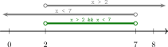
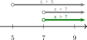
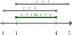
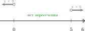
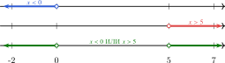
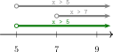
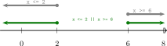
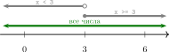
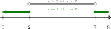

Логика

В математике мы привыкли, что значение выражения обычно является числом. Например, значение выражения \(7 + 5\) равно \(12\).
Но иногда нужно получить не число, а ответ «да» или «нет», «истина» или «ложь».
Здесь нам на помощь приходят логические высказывания.
Логическое высказывание — это утверждение, про которое можно однозначно сказать: оно истинно или ложно.
Например, высказывание «\(7\) — простое число» истинно, а высказывание «\(8\) — простое число» ложно.
| Утверждение | Значение |
|---|---|
| \(7\) — простое число | истина |
| \(8\) — простое число | ложь |
| \(7 + 5\) | не является логическим высказыванием |
| Это красивый рисунок | не является логическим высказыванием |
Если записать логическое высказывание на языке математики, то получим логическое выражение.
Например:
| Высказывание | Выражение | Значение при \(x = 7\) | Значение при \(x = 4\) |
|---|---|---|---|
| x равно 7 | x == 7 |
true |
false |
| x больше 5 | x > 5 |
true |
false |
| x не равно 7 | x != 7 |
false |
true |
| x нечётно | x % 2 != 0 |
true |
false |
Далее в логических выражениях мы будем использовать обозначения, принятые в программировании:
- равенство будем записывать как
== - не равно будем записывать как
!= - остаток от деления —
% - истину и ложь будем записывать как
trueиfalse
Операции сравнения
Операторы сравнения сравнивают два значения и дают результат true или false.
| Оператор | Смысл | true |
false |
|---|---|---|---|
== |
равно | 5 == 5 |
5 == 7 |
!= |
не равно | 5 != 7 |
5 != 5 |
> |
больше | 8 > 3 |
2 > 6 |
< |
меньше | 2 < 6 |
8 < 3 |
>= |
больше или равно | 7 >= 7 |
4 >= 9 |
<= |
меньше или равно | 4 <= 9 |
9 <= 4 |
Логические переменные
Логическую переменную удобно использовать, когда нужно коротко обозначить логическое выражение.
Например, пусть
Здесь \(x\) — обычная числовая переменная. При разных значениях \(x\) выражения \(A\) и \(B\) могут быть истинными или ложными.
В этом примере:
- \(A\) истинно, если \(x\) нечётно
- \(B\) истинно, если \(x\) больше \(5\)
Значит, при каждом конкретном значении \(x\) переменные \(A\) и \(B\) принимают одно из двух значений: true или false.
В программировании для таких значений используют тип boolean:
Задачи для тренировки
1. Какие из следующих утверждений являются логическими высказываниями? Для каждого логического высказывания укажите, истинно оно или ложно.
a) \(15\) делится на \(3\)
b) Закройте окно.
c) \(21\) — чётное число.
d) Это интересная задача.
e) \(7 > 10\)
Ответ
a) Логическое высказывание, истина.
b) Не логическое высказывание: это команда.
c) Логическое высказывание, ложь.
d) Не логическое высказывание: нельзя однозначно определить, истинно оно или ложно.
e) Логическое высказывание, ложь.
2. Найдите значения выражений при \(x = 2\) и при \(x = 9\).
a) x == 2
b) x != 2
c) x < 5
d) x % 2 == 0
Ответ
a) при \(x = 2\): true, при \(x = 9\): false.
b) при \(x = 2\): false, при \(x = 9\): true.
c) при \(x = 2\): true, при \(x = 9\): false.
d) при \(x = 2\): true, при \(x = 9\): false.
Составные логические выражения
Логические выражения можно объединять с помощью операторов И, ИЛИ, НЕ. Далее мы будем использовать обозначения из программирования: &&, ||, !.
Работу этих операторов удобно разбирать по таблицам истинности. В них перечисляют все возможные значения входных выражений и для каждого случая указывают результат.
Логическое И
A && B истинно, только если истинны оба выражения.
| \(A\) | \(B\) | A && B |
|---|---|---|
false |
false |
false |
false |
true |
false |
true |
false |
false |
true |
true |
true |
Таблица истинности для И
Логическое ИЛИ
A || B истинно, если истинно хотя бы одно выражение.
| \(A\) | \(B\) | A || B |
|---|---|---|
false |
false |
false |
false |
true |
true |
true |
false |
true |
true |
true |
true |
Таблица истинности для ИЛИ
Логическое НЕ
!A меняет истину на ложь, а ложь на истину.
| \(A\) | !A |
|---|---|
true |
false |
false |
true |
Таблица истинности для НЕ
Задачи для тренировки
На вычисление значения выражения и работу с таблицами истинности.
1. Пусть
A = x % 3 == 0
B = x < 10
Найдите значения \(A\), \(B\), A && B, A || B, !A при \(x = 12\).
Ответ
A = true
B = false
A && B = false
A || B = true
!A = false
2. Запишите логическое выражение для условия: число \(x\) нечётно и не равно \(7\).
Ответ
x % 2 != 0 && x != 7
3. Постройте таблицу истинности для выражения !A || B.
Ответ
| \(A\) | \(B\) | !A |
!A || B |
|---|---|---|---|
false |
false |
true |
true |
false |
true |
true |
true |
true |
false |
false |
false |
true |
true |
false |
true |
Логические выражения на числовой прямой
Составные условия с числами удобно разбирать на числовой прямой.
Далее разберём на примерах несколько частых случаев.
Логическое И на числовой прямой
Для логического И берём общую часть на числовой прямой.
Задача:
Покажите на числовой прямой множество значений, удовлетворяющих условию.
x > 2 && x < 7
Решение:
Сначала построим числовые лучи для двух условий, затем построим интервал зелёным — пересечение этих лучей.

Задача:
Покажите на числовой прямой множество значений, удовлетворяющих условию.
x > 5 && x > 7
Решение:
Сначала построим числовые лучи для двух условий. Луч \(x > 7\) целиком входит в луч \(x > 5\), поэтому общая часть — числа правее \(7\).

Задача:
Покажите на числовой прямой множество значений, удовлетворяющих условию.
x >= 1 && x <= 4
Решение:
Сначала построим два условия на числовой прямой. Их общая часть — отрезок от \(1\) до \(4\), включая границы.

Задача:
Покажите на числовой прямой множество значений, удовлетворяющих условию.
x < 0 && x > 5
Решение:
Строим два луча: один левее \(0\), другой правее \(5\). Эти лучи не пересекаются, поэтому подходящих значений нет.

Логическое ИЛИ на числовой прямой
Для логического ИЛИ берём все точки, которые входят хотя бы в одно из условий.
Задача:
Покажите на числовой прямой множество значений, удовлетворяющих условию.
x < 0 || x > 5
Решение:
Строим два луча: левее \(0\) и правее \(5\). Для логического ИЛИ берём объединение этих лучей.

Задача:
Покажите на числовой прямой множество значений, удовлетворяющих условию.
x > 5 || x > 7
Решение:
Строим два луча для двух условий. Луч \(x > 7\) целиком входит в луч \(x > 5\), поэтому после объединения остаются числа правее \(5\).

Задача:
Покажите на числовой прямой множество значений, удовлетворяющих условию.
x <= 2 || x >= 6
Решение:
Строим два луча: числа не больше \(2\) и числа не меньше \(6\). При логическом ИЛИ берём оба луча.

Задача:
Покажите на числовой прямой множество значений, удовлетворяющих условию.
x < 3 || x >= 3
Решение:
Любое число либо меньше \(3\), либо не меньше \(3\), поэтому получается вся числовая прямая.

Логическое НЕ на числовой прямой
Если условие задаёт некоторое множество точек на прямой, то отрицание задаёт все остальные точки.
При отрицании условия на числовой прямой отмечают дополнение к множеству его решений.
!(x >= a) ⇔ x < a
⇔ означает «равносильно», то есть в выражениях одну запись можно заменить другой.
Задача:
Покажите на числовой прямой множество значений, удовлетворяющих условию.
!(x > 3)
Решение:
Сначала отмечаем луч \(x > 3\). Затем берём его дополнение: все точки, которые не входят в этот луч, включая \(3\).
При отрицании неравенства меняется не только направление, но и строгость границы.
< и > не включают граничное значение, поэтому его отмечают пустым кружком. <= и >= включают граничное значение, поэтому его отмечают закрашенным кружком. < и > называют строгими неравенствами, <= и >= — нестрогими.
Задача:
Покажите на числовой прямой множество значений, удовлетворяющих условию.
!(x < 5)
Решение:
Сначала отмечаем луч \(x < 5\). После отрицания остаются все точки, начиная с \(5\) и правее.
Задача:
Покажите на числовой прямой множество значений, удовлетворяющих условию.
!!(x > 3)
Решение:
Двойное отрицание сокращается, поэтому остаётся условие \(x > 3\).
Законы де Моргана на числовой прямой
Для отрицания составного условия сначала строят множество решений исходного выражения, затем берут его дополнение.
Эти два правила называют законами де Моргана.
Почему меняется && на ||?
Если условие A && B ложно, достаточно, чтобы нарушалось хотя бы одно из двух условий. Поэтому после отрицания появляется ||.
На числовой прямой это означает: не попали в общую часть, значит попали хотя бы в одно из дополнений.
Почему меняется || на &&?
Если условие A || B ложно, значит не выполнено ни одно из условий. Поэтому после отрицания появляется &&.
На числовой прямой это означает: не попали в объединение, значит не попали ни в одно из множеств.
Задача:
Покажите на числовой прямой множество значений, удовлетворяющих условию.
!(x > 2 && x < 7)
Решение:
Сначала строим общую часть для условий \(x > 2\) и \(x < 7\). Затем применяем закон де Моргана.

Задача:
Покажите на числовой прямой множество значений, удовлетворяющих условию.
!(x < 0 || x > 5)
Решение:
Сначала строим объединение двух лучей: \(x < 0\) и \(x > 5\). Затем применяем закон де Моргана.
Задачи для тренировки
1. На числовой прямой отмечено множество значений \(x\).
Выберите все подходящие логические выражения.
a) -2 < x && x <= 4
b) x >= -2 && x < 4
c) x <= 4 && x > -2
d) x <= -2 || x > 4
Ответ
Правильные ответы: a), c).
2. На числовой прямой отмечено множество значений \(x\).
Выберите все подходящие логические выражения.
a) x <= 1 || x > 5
b) x >= 5 || x < 1
c) x < 1 && x >= 5
d) x < 1 || x >= 5
Ответ
Правильные ответы: b), d).
3. На числовой прямой отмечено множество значений \(x\).
Выберите все подходящие логические выражения.
a) x < 3 || x > 7
b) x >= 7 || x <= 3
c) x <= 3 || x >= 7
d) x > 3 && x < 7
Ответ
Правильные ответы: b), c).
4. На числовой прямой отмечено множество значений \(x\).
Выберите все подходящие логические выражения.
a) x < 2 && x >= -4
b) x > -4 && x <= 2
c) x <= -4 || x > 2
d) x >= -4 && x < 2
Ответ
Правильные ответы: a), d).
5. Ученик записал:
!(x > 4) ⇔ x < 4
Найдите ошибку и запишите правильный ответ.
Ответ
Ошибка в том, что число \(4\) тоже подходит.
!(x > 4) ⇔ x <= 4
6. Ученик записал:
x > 2 || x > 7 ⇔ x > 7
Верно ли это? Если нет, объясните ошибку и запишите правильный ответ.
Ответ
Неверно.
Если \(x > 7\), то \(x > 2\) тоже верно, значит множество решений задаётся более широким условием.
x > 2 || x > 7 ⇔ x > 2
7. Ученик записал:
!(x <= 1 || x >= 5) ⇔ x < 1 && x > 5
Найдите ошибку и запишите правильный ответ.
Ответ
Ошибка в двух местах:
- после отрицания
||должно перейти в&& - знаки неравенств тоже меняются
!(x <= 1 || x >= 5) ⇔ x > 1 && x < 5
8. Запишите без знака отрицания:
!(x < -3)
Ответ
x >= -3
9. Запишите без знака отрицания:
!(x > 1 && x < 6)
Ответ
x <= 1 || x >= 6
10. Запишите без знака отрицания:
!(x <= -2 || x > 4)
Ответ
x > -2 && x <= 4
11. Найдите все значения \(x\), при котором выражение
x > 0 || x < 5
истинно, а выражение
x > 0 && x < 5
ложно.
Ответ
Выражение x > 0 || x < 5 истинно при любом \(x\).
Выражение x > 0 && x < 5 ложно при \(x \le 0\) или \(x \ge 5\).
Значит, подходят все \(x \le 0\) или \(x \ge 5\).
12. Из чисел
\(-3, 0, 2, 5, 8\)
выберите все значения \(x\), для которых истинно выражение
!(x > 1 && x < 6)
Ответ
\(-3, 0, 8\)
13. Из чисел
\(-5, -1, 0, 4, 7\)
выберите все значения \(x\), для которых истинно выражение
!(x < 0 || x >= 4)
Ответ
\(0\)
Название
booleanпроисходит от фамилии Джорджа Буля.